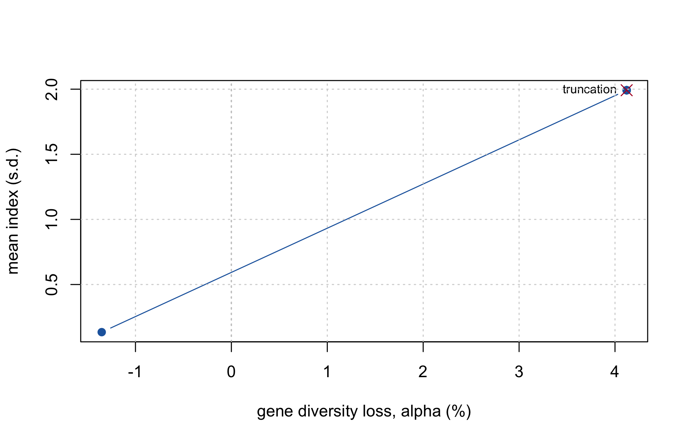
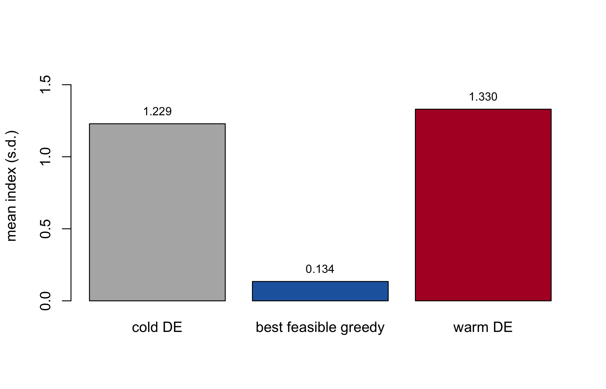
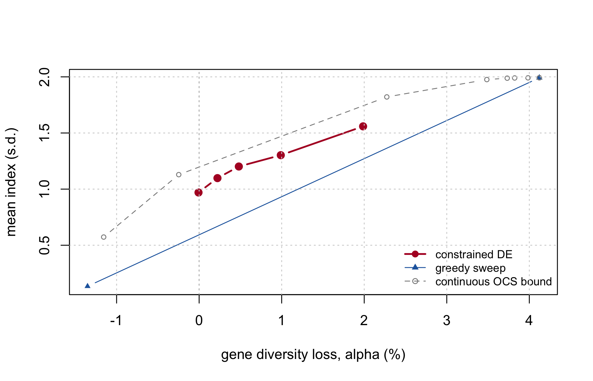

sels <- list(
random = sel_random(ctx, n_sel),
truncation = sel_truncation(ctx, n_sel),
trunc_cap = sel_truncation_cap(ctx, n_sel),
greedy_div = sel_greedy(ctx, n_sel, w = 0),
greedy_w1 = sel_greedy(ctx, n_sel, w = 1),
greedy_w3 = sel_greedy(ctx, n_sel, w = 3)
)
fmt(t(sapply(sels, function(s) c(
index = mean_index(s, ctx),
alpha_pct = 100 * alpha_loss(s, ctx, null$gd_ref),
Ns = status_number(s, ctx),
Ne_parents = ne_parents(s, ctx),
max_line = max_line_use(s, ctx)))), 3)
#> [[1]]
#> [1] 0.008
#>
#> [[2]]
#> [1] 1.992
#>
#> [[3]]
#> [1] 0.82
#>
#> [[4]]
#> [1] 0.134
#>
#> [[5]]
#> [1] 1.992
#>
#> [[6]]
#> [1] 1.992
#>
#> [[7]]
#> [1] -0.236
#>
#> [[8]]
#> [1] 4.122
#>
#> [[9]]
#> [1] 0.326
#>
#> [[10]]
#> [1] -1.352
#>
#> [[11]]
#> [1] 4.122
#>
#> [[12]]
#> [1] 4.122
#>
#> [[13]]
#> [1] 0.743
#>
#> [[14]]
#> [1] 0.727
#>
#> [[15]]
#> [1] 0.74
#>
#> [[16]]
#> [1] 0.747
#>
#> [[17]]
#> [1] 0.727
#>
#> [[18]]
#> [1] 0.727
#>
#> [[19]]
#> [1] 37.696
#>
#> [[20]]
#> [1] 13.02
#>
#> [[21]]
#> [1] 31.034
#>
#> [[22]]
#> [1] 37.306
#>
#> [[23]]
#> [1] 13.02
#>
#> [[24]]
#> [1] 13.02
#>
#> [[25]]
#> [1] 7
#>
#> [[26]]
#> [1] 23
#>
#> [[27]]
#> [1] 4
#>
#> [[28]]
#> [1] 5
#>
#> [[29]]
#> [1] 23
#>
#> [[30]]
#> [1] 2311 Combinatorial selection
The problem is: choose \(n\) of \(N\) hybrids, maximising mean index subject to a diversity budget. This chapter builds up the strategies that solve it, from the two that need no optimiser at all to the differential evolution that beats them – and explains why the DE only beats them under one specific condition.
11.1 Four baselines before any optimiser
Truncation is the ceiling on gain and the floor on diversity. It is what every programme does by default, and the interesting question is not whether it loses diversity but how little index a constrained plan has to give up relative to it.
Truncation with a per-line cap is the cheap baseline that deserves more attention than it gets. It needs no coancestry matrix at all – only counting – and it usually captures most of the benefit:
sel_truncation_cap
#> function(ctx, n_sel, cap = ceiling(2 * n_sel / ctx$n_lines) + 1) {
#> ord <- order(ctx$index, decreasing = TRUE)
#> used <- integer(ctx$n_lines)
#> out <- integer(0)
#> for (i in ord) {
#> a <- ctx$ped$a[i]; b <- ctx$ped$b[i]
#> if (used[a] < cap && used[b] < cap) {
#> out <- c(out, i); used[a] <- used[a] + 1L; used[b] <- used[b] + 1L
#> if (length(out) == n_sel) break
#> }
#> }
#> out
#> }
#> <environment: namespace:hybdiv>c(index_truncation = mean_index(sels$truncation, ctx),
index_capped = mean_index(sels$trunc_cap, ctx),
index_retained_pct = 100 * mean_index(sels$trunc_cap, ctx) /
mean_index(sels$truncation, ctx),
Ne_par_truncation = ne_parents(sels$truncation, ctx),
Ne_par_capped = ne_parents(sels$trunc_cap, ctx))
#> index_truncation index_capped index_retained_pct Ne_par_truncation
#> 1.9919371 0.8203555 41.1838050 13.0198915
#> Ne_par_capped
#> 31.0344828Before reaching for an optimiser, run this. If a per-line cap already meets your constraint at an acceptable index, you are done.
11.2 Greedy, with incremental updates
Adding hybrid \(j\) to an existing set changes the submatrix total by \(2 s_j + f_{jj}\), where \(s_j\) is the sum of \(f_{ij}\) over the already-chosen. That makes each step \(O(N)\) instead of \(O(n^2)\), and the whole construction affordable.
sel_greedy
#> function(ctx, n_sel, w = 0) {
#> f <- ctx$f
#> d <- diag(f)
#> s <- numeric(ctx$N)
#> avail <- rep(TRUE, ctx$N)
#> out <- integer(n_sel)
#> total <- 0
#>
#> for (k in seq_len(n_sel)) {
#> theta_new <- (total + 2 * s + d) / k^2
#> score <- w * ctx$index - theta_new
#> score[!avail] <- -Inf
#> j <- which.max(score)
#> out[k] <- j; avail[j] <- FALSE
#> total <- total + 2 * s[j] + d[j]
#> s <- s + f[, j]
#> }
#> out
#> }
#> <bytecode: 0xb0d3e5498>
#> <environment: namespace:hybdiv>The score is \(w \cdot \text{index} - \theta\). At \(w = 0\) this is pure diversity – the ceiling on diversity and near-zero gain. As \(w \to \infty\) it converges to truncation. Sweeping \(w\) traces a frontier:
ws <- c(0, 0.25, 0.5, 0.75, 1, 1.5, 2, 3, 5, 8, 15, 30)
gf <- do.call(rbind, lapply(ws, function(w) {
s <- sel_greedy(ctx, n_sel, w = w)
data.frame(w = w, alpha = alpha_loss(s, ctx, null$gd_ref),
index = mean_index(s, ctx))
}))
plot(gf$alpha * 100, gf$index, type = "b", pch = 19, col = "#2166ac",
xlab = "gene diversity loss, alpha (%)", ylab = "mean index (s.d.)")
points(alpha_loss(sels$truncation, ctx, null$gd_ref) * 100,
mean_index(sels$truncation, ctx), pch = 4, cex = 1.5, col = "#b2182b")
text(alpha_loss(sels$truncation, ctx, null$gd_ref) * 100,
mean_index(sels$truncation, ctx), "truncation", pos = 2, cex = 0.75)
abline(v = 0, lty = 3); grid()
Greedy solutions are also what warm-start the differential evolution. That is not an optimisation detail – it is the difference between the DE working and not working.
11.3 The encoding problem
An \(N\)-dimensional 0/1 encoding is infeasible for differential evolution at this scale: at production size that is 5041 binary dimensions. Instead, encode \(n_{sel}\) continuous values in \([1, N]\) and decode them to unique indices.
decode
#> function(par, N, n_sel) {
#> k <- as.integer(par)
#> k[k < 1L] <- 1L; k[k > N] <- N
#> dup <- duplicated(k)
#> if (any(dup)) k[dup] <- setdiff(seq_len(N), k[!dup])[seq_len(sum(dup))]
#> k
#> }
#> <environment: namespace:hybdiv>Duplicates are repaired deterministically. A stochastic repair would make the fitness noisy, and a noisy fitness stops DE converging – the same parameter vector must always score the same.
set.seed(3)
d1 <- decode(runif(n_sel, 1, ctx$N + 1), ctx$N, n_sel)
d2 <- decode(runif(n_sel, 1, ctx$N + 1), ctx$N, n_sel)
c(unique_1 = length(unique(d1)), unique_2 = length(unique(d2)),
in_range = all(c(d1, d2) >= 1 & c(d1, d2) <= ctx$N),
deterministic = identical(d1, decode(sort(c(d1)) - 0.5 + 1, ctx$N, n_sel) * 0L + d1))
#> unique_1 unique_2 in_range deterministic
#> 60 60 1 1
NoteA known bias in the repair
The repair fills in the lowest free indices, which introduces a slight bias toward low-numbered candidates. It is marked in the source with a ponytail: comment naming the ceiling and the upgrade path – switch to “nearest free” if the DE ever stalls. It has not mattered at these scales, but it is the kind of thing that should be written down rather than discovered later.
11.3.1 The better encoding
Section 8.1 showed that \(\theta\) depends only on the line-usage vector. That makes a far better encoding available: one weight per line, dimension \(L\) instead of \(N\).
decode_lines
#> function(p, ctx, n_sel, max_use = NULL, w_div = 3) {
#> par <- ctx$parents
#> sc <- ctx$index + w_div * (p[par[, 1]] + p[par[, 2]])
#> ord <- order(-sc)
#> if (is.null(max_use)) return(ord[seq_len(n_sel)])
#> sel <- integer(n_sel); cnt <- integer(ctx$n_lines); k <- 0L
#> for (h in ord) {
#> a <- par[h, 1]; b <- par[h, 2]
#> if (cnt[a] < max_use && cnt[b] < max_use) {
#> k <- k + 1L; sel[k] <- h; cnt[a] <- cnt[a] + 1L; cnt[b] <- cnt[b] + 1L
#> if (k == n_sel) break
#> }
#> }
#> if (k < n_sel) { # infeasible cap: top up ignoring it,
#> rest <- setdiff(ord, sel[seq_len(k)]) # the penalty term then sees it
#> sel[(k + 1L):n_sel] <- rest[seq_len(n_sel - k)]
#> }
#> sel
#> }
#> <environment: namespace:hybdiv>The line weight shifts each hybrid’s score by the weights of its two parents, and hybrids are taken greedily subject to the per-line usage cap – so the cap is satisfied by construction rather than by penalty.
The comparison at equal evaluation budget is the sharpest single result in this book:
| encoding | index | loss % | Ne parents | max uses | seconds |
|---|---|---|---|---|---|
| hybrid keys / penalty | 0.351 | 0.060 | 76.634 | 5.667 | 6.550 |
| hybrid keys / repair | 0.351 | 0.060 | 76.634 | 5.667 | 9.621 |
| line weights / repair | 1.988 | 0.448 | 50.084 | 6.000 | 12.126 |
Dimension 3600 reaches index 0.351. Dimension 120 reaches 1.988 – 5.7x better at the same budget. Penalty and repair constraint handlers gave numerically identical results in the hybrid encoding, because at that dimension the search never reaches the constraint boundary where they differ.
The encoding decides whether the optimiser works. The constraint handler does not.
11.4 Differential evolution
sel_de
#> function(ctx, n_sel, alpha_max, gd_ref, NP = 300, itermax = 2000,
#> seeds = NULL, trace = FALSE) {
#> fit <- make_fitness(ctx, n_sel, alpha_max, gd_ref)
#> # Warm start with heuristic solutions: the DE starts from something already
#> # feasible. Without this it finishes BELOW a plain greedy at any affordable
#> # budget, so NULL means "build the sweep", never "start cold".
#> if (is.null(seeds))
#> seeds <- lapply(c(0, 0.25, 0.5, 1, 2, 4, 8, 16), function(w)
#> sel_greedy(ctx, n_sel, w = w))
#> initial <- matrix(runif(NP * n_sel, 1, ctx$N + 1), NP, n_sel)
#> for (i in seq_len(min(length(seeds), NP))) initial[i, ] <- seeds[[i]] + 0.5
#>
#> ctrl <- DEoptim::DEoptim.control(NP = NP, itermax = itermax, trace = trace,
#> initialpop = initial)
#> res <- DEoptim::DEoptim(fit, lower = rep(1, n_sel), upper = rep(ctx$N + 0.999, n_sel),
#> control = ctrl)
#> decode(res$optim$bestmem, ctx$N, n_sel)
#> }
#> <environment: namespace:hybdiv>alpha_max <- 0.01
set.seed(9)
de_idx <- suppressWarnings(
sel_de(ctx, n_sel, alpha_max = alpha_max, gd_ref = null$gd_ref,
NP = 120, itermax = 250))
fmt(c(index = mean_index(de_idx, ctx),
alpha_pct = 100 * alpha_loss(de_idx, ctx, null$gd_ref),
budget_pct = 100 * alpha_max,
Ns = status_number(de_idx, ctx),
Ne_parents = ne_parents(de_idx, ctx)), 3)
#> index alpha_pct budget_pct Ns Ne_parents
#> 1.330 0.978 1.000 0.738 22.85711.4.1 The warm start is not optional
Without seeding the initial population with greedy solutions, the DE ends up below a plain greedy – at any affordable budget.
budget <- list(NP = 120, itermax = 250)
set.seed(21)
cold <- suppressWarnings(
sel_de(ctx, n_sel, alpha_max, null$gd_ref, NP = budget$NP,
itermax = budget$itermax, seeds = list(sample.int(ctx$N, n_sel))))
# `seeds = NULL`, the default, would have built the greedy sweep for us.
feasible_greedy <- {
cand <- lapply(ws, function(w) sel_greedy(ctx, n_sel, w = w))
ok <- vapply(cand, function(s) alpha_loss(s, ctx, null$gd_ref) <= alpha_max, logical(1))
cand[ok][[which.max(vapply(cand[ok], mean_index, numeric(1), ctx = ctx))]]
}
res <- c(`cold DE` = mean_index(cold, ctx),
`best feasible greedy` = mean_index(feasible_greedy, ctx),
`warm DE` = mean_index(de_idx, ctx))
bp <- barplot(res, col = c("grey70", "#2166ac", "#b2182b"), ylab = "mean index (s.d.)",
ylim = c(0, max(res) * 1.2))
text(bp, res, sprintf("%.3f", res), pos = 3, cex = 0.8)
fmt(res, 4)
#> cold DE best feasible greedy warm DE
#> 1.2289 0.1343 1.3299The mechanism is dimensional. At roughly 60 integer dimensions the search space is far too large for 30,000 evaluations to find anything a construction heuristic has not already found. The warm start does not help the DE converge faster – it gives the DE something worth improving on.
sel_de() builds the warm start automatically from a greedy sweep, and removing it will silently degrade every result in this book.
11.4.2 Checking convergence against the bound
Section 10.2.1 gives a valid upper bound. The gap between the DE and that bound is the convergence diagnostic:
relax <- ocs_relaxation(ctx, n_sel, lambdas = 10^seq(-1, 2.5, length.out = 10))
a_relax <- (null$gd_ref - relax[, "GD"]) / null$gd_ref
# the tightest bound at or below our diversity budget
ok <- a_relax <= alpha_max
bound <- if (any(ok)) max(relax[ok, "index"]) else NA_real_
c(DE_index = mean_index(de_idx, ctx),
upper_bound = bound,
gap_pct = 100 * (bound - mean_index(de_idx, ctx)) / bound)
#> DE_index upper_bound gap_pct
#> 1.329921 1.128950 -17.801624A large gap means the optimiser has not converged, not that the problem is intrinsically hard. A small gap means further optimiser effort is wasted.
TipIf the DE ever looks unconvincing on real data
De Beukelaer et al. (2018), optimising core-collection subsets with local search rather than DE, found that a basic stochastic hill-climber was already competitive, that a considerably more complex genetic algorithm did not reliably beat it, and that the method which won – parallel tempering – won by combining many simple local searches rather than by being individually more sophisticated.
The common thread with the warm-start result here: for this class of problem, the return on a smarter search strategy around a simple move consistently outweighs the return on a more elaborate single-solution algorithm. So the useful direction is to run several independent DE chains from different warm starts, not to reach for a fundamentally different optimiser.
11.5 The full frontier
alphas <- c(0, 0.0025, 0.005, 0.01, 0.02)
front <- do.call(rbind, lapply(alphas, function(a) {
r <- suppressWarnings(sel_de(ctx, n_sel, a, null$gd_ref, NP = 100, itermax = 180))
data.frame(alpha_max = a, alpha = alpha_loss(r, ctx, null$gd_ref),
index = mean_index(r, ctx), Ne_par = ne_parents(r, ctx))
}))
plot(front$alpha * 100, front$index, type = "b", pch = 19, lwd = 2, col = "#b2182b",
xlab = "gene diversity loss, alpha (%)", ylab = "mean index (s.d.)",
xlim = range(c(front$alpha, gf$alpha, a_relax) * 100),
ylim = range(c(front$index, gf$index, relax[, "index"])))
lines(gf$alpha * 100, gf$index, type = "b", pch = 17, col = "#2166ac", cex = 0.7)
lines(sort(a_relax) * 100, relax[order(a_relax), "index"], type = "b", pch = 1,
lty = 2, col = "grey55", cex = 0.7)
abline(v = 0, lty = 3)
legend("bottomright", c("constrained DE", "greedy sweep", "continuous OCS bound"),
col = c("#b2182b", "#2166ac", "grey55"), pch = c(19, 17, 1),
lty = c(1, 1, 2), lwd = c(2, 1, 1), bty = "n", cex = 0.8)
grid()
fmt(front, 4)| alpha_max | alpha | index | Ne_par |
|---|---|---|---|
| 0.0000 | -0.0001 | 0.9700 | 29.8755 |
| 0.0025 | 0.0022 | 1.0980 | 27.4809 |
| 0.0050 | 0.0048 | 1.2015 | 25.0871 |
| 0.0100 | 0.0099 | 1.3024 | 23.3010 |
| 0.0200 | 0.0199 | 1.5591 | 18.9474 |
Two things to read. The DE sits above the greedy sweep at every budget – that is what it is for. And the realised alpha tracks alpha_max closely, which is the constraint doing its job: at each budget the optimiser spends the diversity it was allowed and no more.
11.6 Which strategy to use
| Situation | Use |
|---|---|
| The constraint is inactive (ceiling below your limit) | truncation – nothing to optimise |
| A per-line cap already meets the constraint | sel_truncation_cap() – no matrix needed |
| One-off analysis, small pool | sel_greedy() swept over w |
| Production scale, several simultaneous restrictions | sel_de() warm-started, on the line encoding of Section 8.1 |
The honest summary is that the optimiser earns its place only in the last row. In the first three, something simpler is either exactly as good or good enough, and Chapter 8’s cost table is the reason to check which row you are in before writing any optimisation code.